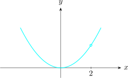
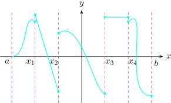

2.7 Continuity of a Function
Let \(f\) be defined for all \(x\) near \(x = x_0\) as well as at \(x = x_0\) (i.e in a \(\delta - \) neighborhood of \(x_0\)). The function \(f\) is said to be continuous at \(x = x_0\) if \[\boxed {\lim \limits _{x \rightarrow x_0} f(x) = f(x_0)}\]
Note that this implies three conditions which must be met in order that \(f(x)\) be continuous at \(x = x_0\)
- 1.
- \(\lim \limits _{x \rightarrow x_0} f(x)\) exists i.e \(\lim \limits _{x \rightarrow x_0} f(x) = L \in \mathbb {R}\).
- 2.
- \(f(x_0)\) must exist if \(f(x)\) is defined at \(x = x_0\).
- 3.
- \(\displaystyle {\lim \limits _{x \rightarrow x_0} f(x) = f(x_0)}\)
Equivalently, if \(f\) is continuous at \(x_0\) , we can write this in the suggestive form \[\lim _{x \rightarrow x_0} f(x) = f\Big (\lim \limits _{x \rightarrow x_0} x\Big )\]
- 1.
- Determine whether \(f(x) = \begin {cases} x^2, & x \neq 2\\ 0, & x = 2\\ \end {cases} \) is continuous at \(x = 2\).

- (a)
- \(\displaystyle {\lim _{x\rightarrow 2^-} f(x ) = \lim _{x\rightarrow 2}x^2 = 4}\)
\(\displaystyle {\lim _{x\rightarrow 2^+}f(x) = \lim _{x\rightarrow 2}x^2 = 4 = \lim _{x\rightarrow 2^-}f(x)}\)
\(\therefore \hspace {0.3cm} \lim \limits _{x \rightarrow 2}f(x)\) exists.
- (b)
- \(f(x) = f(2) = 0\)
- (c)
- \(f(2) \neq \lim \limits _{x\rightarrow 2} f(x)\)
\(\therefore \hspace {0.2cm} f\) is not continuous at \(x = 2\).
- 2.
- Determine if \(f(x) = x^2\hspace {0.2cm} \forall x \in \mathbb {R}\) is continuous at \(x = 2\).
\[\lim _{x\rightarrow 2} f(x) = \lim _{x\rightarrow 2}x^2 = f(2) = 4\] \(\therefore \hspace {0.2cm}f\) is continuous at \(x = 2\).
Points where \(f\) fails to be continuous are called discontinuities of \(f\) and \(f\) is said to be discontinuous at these points.
Alternatively, if for any \(\varepsilon > 0\) we can find \(\delta > 0 \ni \left |f(x) - f(x_0)\right | < \varepsilon \) whenever \(\left |x - x_0\right | < \delta \), then \(f\) is continuous at \(x = x_0\) provided \(f(x_0)\) exists.
2.7.1 Right and Left \(-\) hand continuity
If \(f\) is defined only for \(x\geq x_0\), the above definition does not apply. In such case we call \(f\) continuous on the right at \(x = x_0\) if \(\displaystyle {\lim \limits _{x \rightarrow x_0^+}f(x) = f(x_0)}\).
Similar definition exists for left continuity.
2.7.2 Continuity in an Interval
A function \(f\) is said to be continuous in an interval if it is continuous at all points of the interval. In particular, if \(f\) is defined in a closed interval \(a \leq x \leq b\) or \([a,b]\), then \(f\) is continuous in the interval if and only if \[\displaystyle {\lim _{x \rightarrow x_0} f(x) = f(x_0)}\] or \(a< x_0 < b,\) \(\hspace {0.4cm} \displaystyle {\lim _{x \rightarrow x_a^+} f(x) = f(a)}\) and \(\displaystyle {\lim _{x \rightarrow b^-} f(x) = f(b)}\).
2.7.3 Theorems on Continuity
If \(f\) and \(g\) are continuous at \(x = x_0\), so also are the functions \(f(x) \pm g(x) \hspace {0.2cm} , \hspace {0.2cm} f(x)\cdot g(x) \hspace {0.2cm}\) and \(\dfrac {f(x)}{g(x)}\), the last one only if \(g(x_0) \neq 0\).
Functions described as follows are continuous in every finite interval
- 1.
- all polynomials
- 2.
- \(\sin x \) and \(\cos x\)
- 3.
- \(a^x,\hspace {0.2cm} x>0\)
Let the function \(f\) be continuous at \(x = x_0\). Also, suppose that a function \(g\), represented by \(z = g(y)\), is continuous at \(y_0\), where \(y = f(x)\). Then the composite function represented by \(z = g[f(x)]\) is also continuous at \(x = x_0\). \([\) one can say that a continuous function of a continuous is continuous\(]\).
If \(f(x)\) is continuous at \(x = x_0\) and \(f(x_0) > 0\) \([\) or \(f(x_0)< 0]\), there exists an interval about \(x = x_0\), in which \(f(x_0) > 0\) \(\hspace {0.2cm}[\) or \(f(x)< 0]\).
If a function \(f(x)\) is continuous in the interval and is either strictly increasing or strictly decreasing, the inverse function \(f^{-1}(x)\) is single\(-\)valued, continuous, and either strictly increasing or strictly decreasing.
If \(f(x)\) is continuous in \([a,b]\) and if \(f(a) = A\) and \(f(b) = B\), then corresponding to any number \(c\) between \(A\) and \(B\), there exists, atleast one number \(c\) in \([a,b]\) such that \(f(c)= c\). This is called the intermediate value theorem.
If \(f(x)\) is continuous in \([a,b]\) and \(f(a)\) and \(f(b)\) have opposite signs, there is atleast one \(c\) for which \(f(c) = 0\) where \(a< c<b\). This is related to theorem 7.
2.7.4 Piece-wise Continuity
A function is called piece-wise continuous in an interval \(a\leq x \leq b\) if the interval can be subdivided into a finite numbers of intervals in each of which the function is continuous and has finite left-hand and right-hand limits.

- 1.
- Prove that \(f(x) = x\) is continuous at any point \(x = x_0\).
- 2.
- Prove that \(f(x) = 2x^3 + x\) is continuous at any point \(x = x_0\).
- 3.
- For what values of \(x\) is the function discontinuous \[ f(x) = \frac {x - |x|}{x}\]
- 4.
- \(\displaystyle { g(x) = \begin {cases} \dfrac {x - |x|}{x}, & x < 0\\\\ 2, & x = 0\\ \end {cases}}\hspace {0.3cm}\) is \(g\) continuous for \(x \leq 0\)?
Solution.
Part 1
We need to show that given any \(\varepsilon > 0, \exists \) a \(\delta > 0\ni \left |f(x) - f(x_0)\right | < \varepsilon \)
whenever \(0<\left |x - x_0\right |< \delta \).
Now given \(f(x) = x\), then \(\left |f(x) - f(x_0)\right | = \left |x - x_0\right | < \varepsilon = \delta \). So by choosing \(\delta = \varepsilon \) we have the result, since \(f(x_0) = x_0\).
Part 2
Since \(g(x) = x\) is continuous at any point \(x = x_0\), then by theorem 3, \(h(x) = x\cdot x = x^2\) is continuous and \(K(x) = x^2\cdot x = x^3\) is also continuous. Similarly, \(M(x) = 2x^3\) is continuous.
\(\therefore \hspace {0.3cm} f(x) = M(x) + g(x) = 2x^3 + x\) is continuous by theorem 3.
Part 3
For \(x> 0\), \(\hspace {0.2cm} f(x) = \dfrac {x - x}{x} = 0\) discontinuous.
For \(x< 0,\hspace {0.2cm} f(x) = \dfrac {x - (-x)}{x} = 2\) continuous.
For \(x = 0\), \(\hspace {0.2cm} f(x)\) is undefined. Therefore, \(f\) is discontinuous only at \(x = 0\).
Part 4
- 1.
- For \(x< 0\hspace {0.3cm} g(x) = \dfrac {x - |x|}{x} = 2\) and is continuous for \(x<0\).
- 2.
- \(g(0) = 2\)
- 3.
- \(\displaystyle {\lim \limits _{x \rightarrow 0^-} g(x) = \lim \limits _{x \rightarrow 0^-} \dfrac {x - |x|}{x} = 2 = g(0)}\)
Questions on this section
Stuck on something here? Ask below and it stays attached to this topic.